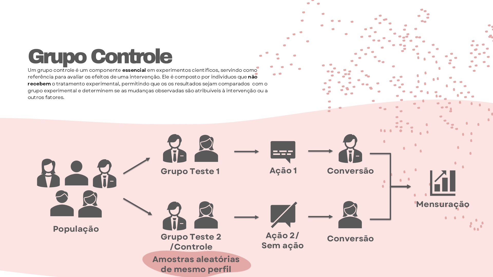

Simplicando o cenário: imagine que você tem uma pizzaria. Você decide lançar uma superpromoção: compre uma pizza, ganhe a borda recheada grátis. Você dispara a campanha para todos os clientes, empolgado. Depois de uma semana, as vendas subiram. Mas… subiram por causa da promoção ou porque era final de mês e as pessoas naturalmente pedem mais pizza?
Aí entra o grupo controle universal — um grupo fixo de clientes que nunca recebe campanha nenhuma e serve como termômetro natural. Segundo Lewis (2004), “o grupo controle é essencial para separar efeitos naturais das ações induzidas pela empresa.” Sem ele, você navega no escuro, sem saber o que realmente funciona.
Além disso, como reforça [Davenport e Harris (2007)] no clássico Competing on Analytics, “empresas orientadas por dados não confiam apenas em resultados positivos; elas precisam provar que o ganho foi realmente causado pela ação planejada, e não pelo acaso”. Em outras palavras, sem grupo controle, você pode estar comemorando sorte, não estratégia.
7.2 🛠 Como criar o seu grupo controle
✅ Passo 1: Defina quem fica fora.
Escolha uma amostra representativa da sua base (ex.: 5–10%) e nunca envie campanhas, promoções, estímulos ou ações para eles. Esse grupo deve ser um retrato fiel do comportamento natural dos clientes.
Por exemplo, se você tem uma fintech com 100 mil clientes, separe 10 mil aleatoriamente para o controle. Não vale pegar só clientes antigos ou só novos — precisa ser uma mistura justa.
✅ Passo 2: Proteja esse grupo.
Como lembra [McCarthy e Perreault (1993)] no livro Basic Marketing, “consistência e integridade no experimento são fundamentais para extrair insights válidos”. Ou seja: não quebre seu grupo no meio de campanhas porque achou que precisava bater a meta do mês! Ele precisa ser sagrado.
✅ Passo 3: Documente quem está no grupo.
Registre IDs, perfis e status no seu CRM, e atualize sempre. Uma boa prática é ter flags automáticos no sistema: quando alguém está no controle, o sistema bloqueia envios automaticamente.
✅ Passo 4: Tecnicamente não é tão dificil assim
Existem muitas maneiras de separar uma amostra aleatória de uma população, mas devo admitir que a minha preferida é usar os digitos do CPF, geralmente já capturamos essa informação no cadastro do cliente e ela é imutável, ou seja, não corre o risco de um momento esse cliente ser controle e em outro momento não.
Para ajudar, vamos simular a marcação na base “base_ativados_gasto”, confesso que foi essa técnica que utilizei para criar meus dados
# Importar bibliotecasimport pandas as pdimport matplotlib.pyplot as pltimport seaborn as snsimport randomimport numpy as npimport warningswarnings.filterwarnings("ignore", category=pd.errors.SettingWithCopyWarning)# Import da base de dadosdf = pd.read_csv('./base_ativados_gasto.csv')# Como essa base já possui a marcação, irei ignorá-la, e irei gerar um CPF Fictício para conseguir ler os digitos necessários para criação do grupo controledf00 = df[['CLIENTNUM']]# Cria a função que gera CPF# Função para gerar CPF fictício no formato 'XXX.XXX.XXX-YY'def gerar_cpf():def calcular_digito(cpf_parcial): soma =sum(int(digito) * peso for digito, peso inzip(cpf_parcial, range(len(cpf_parcial)+1, 1, -1))) resto = soma %11return'0'if resto <2elsestr(11- resto)# Gera os 9 primeiros dígitos aleatórios cpf_nove =''.join([str(random.randint(0, 9)) for _ inrange(9)]) d1 = calcular_digito(cpf_nove) d2 = calcular_digito(cpf_nove + d1) cpf_completo = cpf_nove + d1 + d2returnf'{cpf_completo[:3]}.{cpf_completo[3:6]}.{cpf_completo[6:9]}-{cpf_completo[9:]}'# Criar a nova coluna com CPF fictício único por linhadf00['cpf_simulado'] = [gerar_cpf() for _ inrange(len(df))]# Exibir as primeiras linhas para confirmaçãodf00[['CLIENTNUM', 'cpf_simulado']].head()
CLIENTNUM
cpf_simulado
0
1
951.461.873-47
1
2
673.370.758-63
2
3
239.816.693-71
3
4
262.182.990-23
4
5
461.512.196-27
# criar aletório a partir do cpf# Extrai os 3 últimos dígitos dos 9 primeiros números do CPF simuladodf00['digito_random'] = df00['cpf_simulado'].str.replace('.', '').str.replace('-', '').str[:9].str[-2:]# Visualiza os dadosdf00[['cpf_simulado', 'digito_random']].head()
cpf_simulado
digito_random
0
951.461.873-47
73
1
673.370.758-63
58
2
239.816.693-71
93
3
262.182.990-23
90
4
461.512.196-27
96
# Usa os 3 últimos dígitos do CPF (já criados como digito_sorteio)# Primeiro, cria a coluna como número inteirodf00['digito_random'] = df00['cpf_simulado'].str.replace('.', '').str.replace('-', '').str[:9].str[-2:].astype(int)# Define 10% para grupo Controle (ex: quando resto da divisão por 10 for 0)df00['GRUPO_AB'] = df00['digito_random'].apply(lambda x: 'Controle'if x %10==0else'Abordavel')print(df00['GRUPO_AB'].value_counts(normalize=True).round(3))
Pronto, aplique essa regra a cada CPF novo e terá seu controle uníversal garantido.
7.3 🚀Como aplicar na segmentação de uma campanha
Suponha que você vai rodar uma campanha de cashback segmentada: clientes com alto gasto no cartão recebem 5% de volta. Você pode dividir:
Grupo A: clientes elegíveis que recebem a campanha;
Grupo B: clientes elegíveis que não recebem a campanha (grupo controle universal específico);
Como destacam [Manzi (2012)] em Uncontrolled, “os controles universais são como vigias constantes: eles mostram mudanças de fundo que você nunca perceberia olhando apenas para os testes específicos”.
Fique atento ao fluxo de segmentação e marcação da campanha

Fluxo de marcação do grupo controle universal
Espero que agora você se sinta preparado para encarar a mensuração de testes sem receios!!!